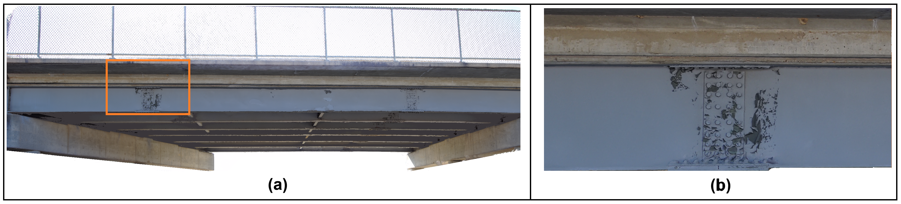

Portfolio
Video-Based 3D Reconstruction of the Old U.S. 66 Bridge
A 4-minute and 35-second video of the Old U.S. 66 Bridge over Roubidoux Creek in Waynesville, Missouri, was captured using a manually operated Skydio 2+ UAV. From 8,270 extracted frames, histogram-based filtering retained 680 representative images. The selected images were processed in Agisoft Metashape Professional 2.1.0 to generate a colorized dense point cloud, a reconstruction-confidence visualization, and a textured 3D model of the concrete arch and pier. The RGB-derived reconstruction was subsequently aligned with sonar point-cloud data in CloudCompare to support multimodal spatial integration.
Tools & Methods: Python · OpenCV · Agisoft Metashape Professional 2.1.0 · CloudCompare · Skydio 2+ · UAV Videography · Histogram-Based Frame Selection · Photogrammetry · Structure from Motion · Dense Point Cloud · Textured 3D Model · Sonar · RGB–Sonar Point-Cloud Alignment


Figure 1. Video-based 3D reconstruction of the Old U.S. 66 Bridge over Roubidoux Creek in Waynesville, Missouri: (a) general view of the bridge, (b) representative frame extracted from the UAV video, (c) colorized dense point cloud, and (d) textured 3D model.


Figure 2. Detailed reconstruction views and confidence assessment: (a–c) textured 3D model viewed from multiple directions and (d) dense point cloud visualized according to reconstruction confidence. Blue regions represent higher-confidence points, while warmer colors indicate lower-confidence regions.


Figure 3. RGB–sonar point-cloud alignment in CloudCompare: (a) sonar point cloud visualized using scalar-field coloring and (b) aligned RGB-derived 3D reconstruction and sonar point cloud displayed in a common spatial frame.
Fine-Detail 3D Digital Twin of the 10th Street Bridge, Rolla, Missouri (Ongoing)
Objective: Develop a high-fidelity 3D digital twin of the 10th Street Bridge in Rolla, Missouri, using UAV imagery, photogrammetry, LiDAR, and multimodal point-cloud processing. Since GPS access is limited beneath the bridge, the RGB-based reconstruction is initially generated in a local coordinate system and subsequently aligned with LiDAR data to establish metric scale and enable real-world measurements. The reconstruction is designed to preserve fine structural and surface details relevant to bridge inspection, defect assessment, and long-term condition monitoring.
Tools & Methods: Python · OpenCV · Agisoft Metashape Professional · CloudCompare · LiDAR · RGB Camera · UAV Imagery · Point-Cloud Processing · Photogrammetry · Structure from Motion · Dense Reconstruction · RGB–LiDAR Registration · Sensor Fusion · Skydio 2+ · Elios 3


